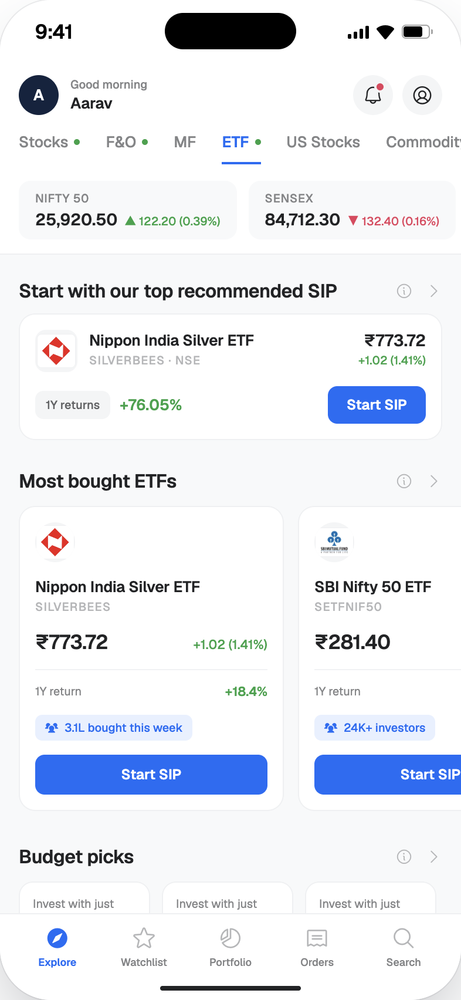
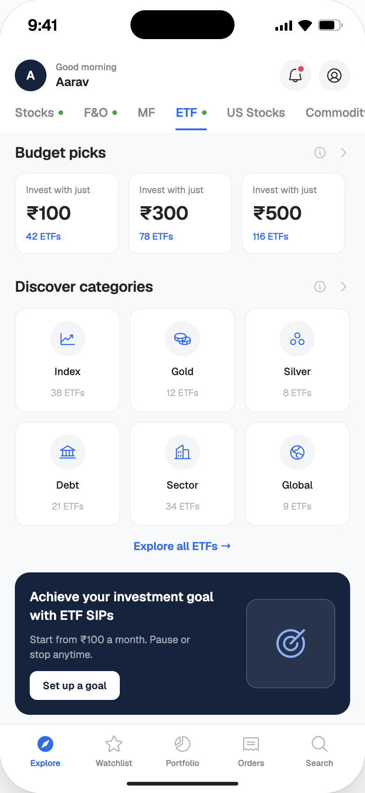
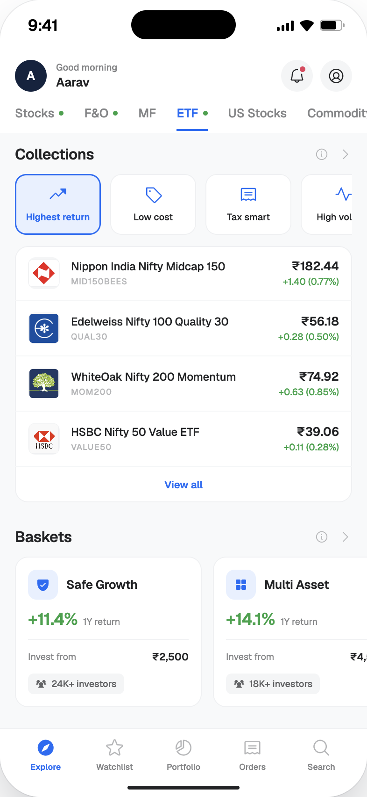
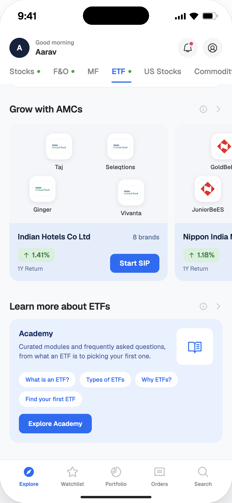

Design


The product.
Designed investment product ETF with its dashboard, detail page and buy journey for 5paisa. Led strategy, UX, and UI across mobile and web, resulting in an 81% surge in ETF turnover.
View Prototype



Source: CleverTap (Nov → Dec 2025 · First month after launch)
Before this redesign, ETFs on 5paisa were buried inside the stocks product — a flat list of names, prices, and daily changes. No discovery, no context, no dedicated experience. For users trying to invest in ETFs, the journey started and ended with a number on a screen.
"How might we transform ETF from a list of assets into a discovery-first investment product that matches targeted user's intent?"
Analysed ETF market behaviour, investment patterns and industry data to understand the product landscape and identify gaps in the existing experience.
Users open the ETF section but don't know where to start — it reads as a flat, undifferentiated list of names.
Most users repurchase the same ETF every time. They lack the context to evaluate or compare alternatives.
ETF doesn't feel different from buying a stock — its distinct value as a product category is invisible to users.
Users form a goal before they browse — the intent ("I want something stable") precedes the product search.
Competitors anchor ETF discovery on intent categories like 'Tax saving' or 'High growth' — outperforming plain search.
Active ETF clients are a small fraction of total users. Most browse without transacting — low turnover confirms this.
Raw metrics — NAV, expense ratio, 1Y return — are shown without context. Users can't judge if a number is good or bad.
Users default to Nifty 50 or Gold ETFs they've heard of. Lesser-known ETFs are skipped regardless of performance.
SIP is the recommended entry point for ETF investing, yet most users have never considered it — it's buried, not surfaced.
Dashboard engagement drops after the first visit. Without a reason to return — alerts, updates, SIP status — users don't come back.
Dashboard categories should not be based on asset type or product taxonomy. Mapped 7 user intent pillars based on research insight and then derived every dashboard section from those.
Introduced quick "Start SIP" CTAs as a first-action across the product and nudges about SIP benefits. This will be growth-oriented for both, user and business.
The ETF product was implemented end-to-end on the 5paisa web platform, maintaining full feature parity with the mobile experience.

After launch, 5paisa underwent a full design system overhaul. All ETF screens were rebuilt to elevate visual consistency while maintaining every UX decision.
Starting with intent — anchoring discovery around what users are actually trying to do — was the right call. It gave every design decision a clear rationale and made cross-functional alignment much easier. The data-first approach to showing ETF context (1Y returns, category tags, budget filters) removed the friction that had been invisible to the team but very real to users.
I'd involve the engineering team earlier in the process. A few intent-based features were simplified late in delivery because of technical constraints we hadn't mapped to the design. Earlier collaboration would have preserved more of the nuance — or found smarter solutions sooner.
Complexity in a financial product is often a symptom of unresolved product thinking — not a design constraint. The biggest wins came not from polishing UI but from reframing how the product was structured. Design's leverage is highest at that layer.
The 81% turnover surge and 35% increase in active ETF clients happened in the first month post-launch. What mattered most wasn't any single screen — it was giving users the context and confidence to act. That's the design problem this project was really solving.